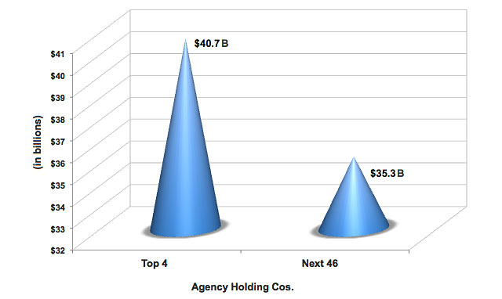
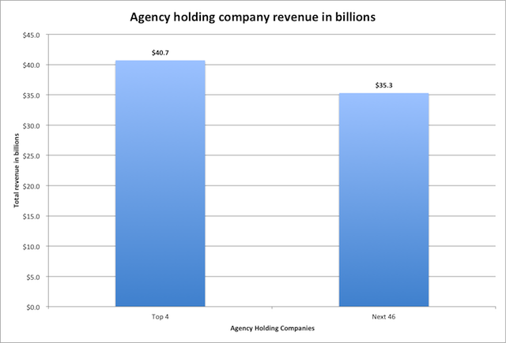
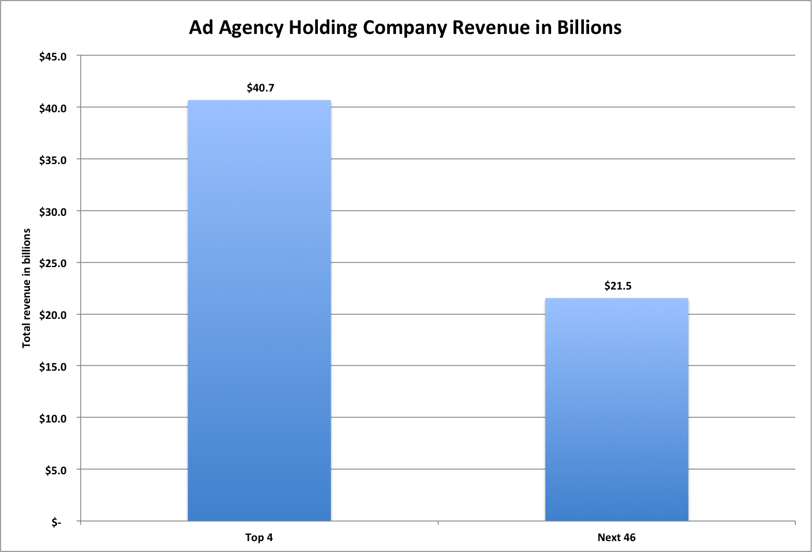
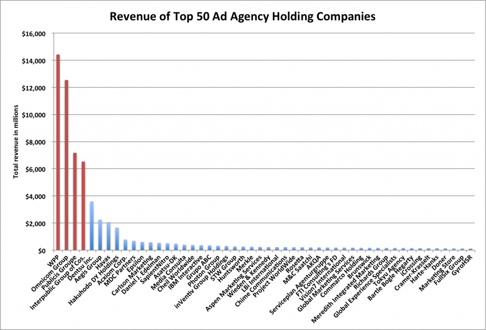

Posted: September 27th, 2011 | Author: chmullig | Filed under: School | Tags: Biking, Columbia, history, NYC | 1 Comment »
Last Thursday Night/Friday morning I participated in an all night NYC bike ride for one of my classes. For more official background, the WSJ wrote it up. It was an optional activity as part of the History of the City of New York class I’m taking with Kenneth Jackson at Columbia University. He, the class, and the bike ride are all institutions at the university, and I lucked into one of the ~400 spots in the class.
I’ve attempted to create a map of the route we took here, but it’s based on my recollection and certainly inaccurate on the details of exactly which streets we took. If anyone knows corrections, let me know. If I was thinking properly I would have taken my Garmin GPS!
It was really fun  I chugged a can of Illy espresso at 10:30, which helped a lot. Only getting ~3 hours of sleep the night before really didn’t help. Stupid University Writing draft.
I chugged a can of Illy espresso at 10:30, which helped a lot. Only getting ~3 hours of sleep the night before really didn’t help. Stupid University Writing draft.
The whole class starting out at once on bikes was intense. Many of us were on rented and borrowed bikes and irregular bikers, so many weren’t very comfortable/confident. It’s really hard to bike slowly in general, especially in a crowd where you can’t turn much. The result was lots of weaving, dodging, and near misses. Plenty of minor bumps, but only a few people really fell down, and nobody needed serious assistance.
We pretty much just went and kept going, rarely did anyone, even the first people, stop for red lights. One of the Columbia Ambulances was bringing up the rear, flashing its lights the whole time. That came in really helpful in giving us some legitimacy, especially in midtown.
Around 1:30ish (I think…) we stopped at Washington Square Park (location of NYU, our wanna be rivals downtown). I went off in search of some food, and ended up having tacos from a cart, and then beer with several grad students, including the TA for my discussion section. A part of the group (1/3rd?) turned back at this point, hopping on the subway or taking cabs back uptown.
From there we went south, around Battery Park City and Battery Park. We were within a few blocks of the WTC site, and could see the incredibly over illuminated new Tower 1 going up. Another bunch (1/4 or the original group?) turned back around here, where the last subway stop for the 1 train (which Columbia is on) is.
Broad St & Wall St were pretty locked down (due to the OccupyWallStreet protests nearby), but we walked up and in front of the NYSE and Federal Hall.
From there we went along to the Brooklyn bridge, went through brooklyn, and I ended up taking the Subway most of the way back (biking from 96th St -> 116th St because the transfer would have taken a long time).
The experience was really cool. Especially the contrast between Central Park, time square, and the side streets. You’d go just 3 blocks and it would have a very different feel at 3AM. It was fun causing a little mayhem for taxis, especially since it was just minor. We regularly got honked at, and over a dozen volunteers would stand in front of the cross traffic, preventing them from even trying to go.
There was some school pride, which was fun (and not hugely common at CU). Seemingly nobody remembers the words to our fight song (because it’s stupid), although everyone knows “Roar, Lion, Roar.” A few people chanted it out, and the rest of us mumbled along.
| Roar, Lion, RoarAnd wake the echoes of the Hudson Valley!Fight on to victory evermore,While the sons of Knickerbocker rally roundColumbia! Columbia!
Shouting her name forever!
Roar, Lion, Roar
For Alma Mater on the Hudson Shore! |
From the Brooklyn Bridge on was a bit rough. We crossed around 4AM and were walking, rather than riding, a fair amount at that point. It also turns out it’s really hard to find a bathroom at ~5 in the morning, even in downtown Brooklyn.
1 Comment »
Posted: June 17th, 2011 | Author: chmullig | Filed under: School | Tags: Columbia, GS, school, study | 4 Comments »
Playing around today, I came upon an obvious/clever idea. A bit of hacking in Inkscape led to this. Note the crown, font and colors (don’t sue me, Trustees!)…
For those interested I’ve uploaded PDF (if you want to print or have a larger copy or something) and SVG (if you want to modify) files. It’s in the original size/aspect ratio for the Keep Calm and Carry On posters, 19¾ x 29½. Anyone is welcome to use it – if you’re feeling generous you’re welcome to cite me.
4 Comments »
Posted: June 16th, 2011 | Author: chmullig | Filed under: Nerdery | Tags: programming, sleep, sort | No Comments »
Inspired by an Ars thread that was inspired by a 4chan thread found on reddit, it’s an interesting sort idea for integers.
Basically, sort a list of integers by spawning a new thread or process for each element then sleep for the value of that element then print out that element. Here’s the original bash example, but I’d love to see other crazy languages.
#!/bin/bash
function f() {
sleep "$1"
echo "$1"
}
while [ -n "$1" ]
do
f "$1" &
shift
done
wait
No Comments »
Posted: June 2nd, 2011 | Author: chmullig | Filed under: Gaming | Tags: gaming, programming, starcraft 2, starcraft II | 1 Comment »
So Stracraft II is a fantastic game, and includes achievements. I’ve turned into a bit of a SC2 achievement whore (Currently: 3350). I long ago completed every achievement in the single player campaign except 4: The Lost Viking. It’s a stupid arcade game within the game! It doesn’t matter at all! Yet I was tantalizingly close to 100%, so finally I decided to tackle it.
First, you can read all sorts of strategies. Basically they come down to this: immediately get 2 side missiles, then get 2 drones. Whenever you loose a drone, replace it first chance you get. Then everything else should be bombs. (Any drop goes through a sequence, so wait until it’s the one you want). Use bombs liberally to prevent death and loss of drones. They make you invincible for a few seconds, in addition to clearly crap away. You’ll have basically all the bombs you need. Press space as fast as you can to shoot faster.
So it’s mostly a question of staying alive, and keeping your drones alive. Except for the bosses/mini bosses there’s not a ton of strategy. After a few attempts yesterday I beat it once, then hit 245k points, then 279k points (getting Silver). That only left gold (500k points), and I didn’t have the energy. However I knew there was a macro on the Windows side to hit space for you. In that case all you’d have to do is navigate around, which isn’t too hard. A few attempts to track one down on the Mac failed. Mac OS X is nice, but it definitely lacks some of the rom emulation tools so popular on Windows. I wanted an OS X program to simply pres the space bar over and over and over again forever, quickly, while not interfering with the rest of the system. It was useless if I couldn’t
However I figured there must be a better option, perhaps Objective-C? My Obj-C is super rusty, but I stumbled across a StackOverflow hint suggesting how easy it would be to do in plain C. Here’s the C program I wrote that uses CG Quartz Events to simulate pressing the space bar every .05 seconds (In retrospect that’s probably way faster than it needs, could probably easily be .1 seconds).
#include <stdio.h>
#include <ApplicationServices/ApplicationServices.h>
#include <unistd.h>
int main (int argc, const char * argv[]) {
CGEventRef spaceDown = CGEventCreateKeyboardEvent (NULL, (CGKeyCode)49, true);
CGEventRef spaceUp = CGEventCreateKeyboardEvent (NULL, (CGKeyCode)49, false);
int sleepTime = 50000;
printf("Pressing space every %d microseconds\n", sleepTime);
sleep(2);
while (1) {
CGEventPost(kCGHIDEventTap, spaceDown);
CGEventPost(kCGHIDEventTap, spaceUp);
usleep(sleepTime);
}
CFRelease(spaceDown);
CFRelease(spaceUp);
return 0;
} |
It can be copied to a file like “cstroker.c” and compiled with this gcc command (you may need to install Xcode if you don’t already have it) from Terminal.app:
gcc -o cstroker cstroker.c -O -Wall -framework ApplicationServices
You then execute it by simply calling ./cstroker
Update: Because some folks asked I’ve uploaded the binary. Might work for you, in which case you can skip the gcc compilation.
Finally nailed Lost Viking Gold!
Posted: May 28th, 2011 | Author: chmullig | Filed under: personal | Tags: beer, booze, churchkey, cocktails, columbia room, drinks, food, google | No Comments »
On Thursday I went to a neat event called “The Art & Science of Beer” hosted by Google’s DC office. They had Greg Engert, the beer impressario from Churchkey, gave a ~90 minute talk with samples of 7 beers. Most of the talk was on the mechanics of beer making throughout history, and how what we think of as mainstream beer is really quite new, to the tune of 100-200 years. Beer like products have been brewed for thousands of years, but it would have been darker, smokier, funkier, sourer, chunkier and less “pure” than what we normally drink now.
The tasting menu he arranged was (in a sort of historical order, with his descriptions in italics):
- Oud Beersel Oud Kriek. Brouwerij Oud Beersel. Traditional Fruit Lambic. Blegium. Tart & Funky. I thought this one was fantastic, giving it ★★★. It was elegantly pink to look at, smell and taste. Definitely had a sour, funky taste but in a good way.
- Aecht Schlenkerla Märzen. Brauerei Heller-Trum. Bamberg Rauchbier Märzen. Germany. Smoke. ★ This was the most interesting beer, but probably the one I would least like to have a whole glass of again. Rauchbier means “smoke beer,” and this is very smokey. It’s a bit like drinking your beer while standing in front of a smoking BBQ. Before kilns the fire smoking would have been employed frequently in beer making, but apparently this is somewhat unique because they use modern lager (?) techniques to remove most of the other flavors, which would normally yield a very smooth clear flavor, but in this case just overwhelmingly highlights the smoke flavor.
- Orchard White. The bruery. Witbier. California. Fruit & Spice. ★★ Pretty good. It was wine-like to me, in appearance and flavor. A bit fruity, with spices like coriander, lavender and orange peel.
- Porterhouse Oyster Stout. Porterhouse Brewing Co. Dry Stout. Ireland. Roast.★★.5 This was a nice stouty flavor. I didn’t write much about it. Apparently the name comes from a long, convoluted process that basically means this beer was made for the poor (such as porters) and they also ate oysters.
- Aventinus. Brauerei Schneider. Weizenbock. Germany. Fruit & Spice.★★★★ This was probably my favorite. It was a brown, tasty beer that didn’t seemed fairly light tasting. Could imagine drinking a bit of it.
- Insanity. Weyerbacher Brewing. Barrel-Aged Barleywine. Pennsylvania. Malt. ★★ I was kinda meh on this one. It was fine, but nothing I would particularly want to return to. A bit bitter, perhaps, but he said it wasn’t.
- Unearthly. Southern Tier Brewing. Imperial IPA. New York. Hop. ★★★ A good, hoppy beer, if that’s what your into.
He recommended gravitating toward Sierra Nevada Torpedo, Anything by Victory Brewing, and Saisons in the beer aisle. Afterwards there were some tasty hors d’œuvre and glasses of whichever beer you wished for. Overall a fantastic event, and very informative.
Marian took me to the lovely Columbia Room on Friday. We arrived at ~5:05 and left ~7:30, and for about half of it were the only patrons in the bar. They do a tasting menu of cocktails, with 2 prescribed and one up to each patron & their bartender. The staff was very warm and friendly, and while I can see how at its worst (particularly if it was “crowded,” which they seemingly strive to avoid) it could come off as a bit pretentious, we had an excellent time.
Derek, JP and Katie all made us feel well tended to and seemed genuinely excited about drinks & sharing drink with the world. We spent most of the time chatting with them about various ingredients behind the bar, getting free sniffs & sips of a few different things. (Oh, and they do have awesomely large ice blocks they cut down to size. Apparently the come from a local ice company that mostly makes them for ice sculpture).
The first drink we had was Chatham Artillery Punch. Classic southern punch w/ lots of booze, kinda sweet. Definitely packs more of a punch than you expect, given the small serving size. My recollection + googling says this has bourbon, cognac and Jamaican rum plus sugar, lemon juice and sparkling wine.
Second was a whiskey and coke, but it was a light whiskey (3-6 months aged), kinda like moonshine he claims, from Texas (True Blue). JP/they made their own hickory smoked cola and carbonated it there. Some lime juice as well, plus some other random stuff. This tasted like a mix between the most delicious whiskey & coke ever and BBQ sauce. Surprising, and tasty. They served that with bourbon vanilla gelato (from Dulcezza), boiled peanuts (hard to eat with a spoon…) and a seasame sugar wafer thing.
Third I had a gin basil smash, because they had fresh basil sitting in front of us on the bar and it kept smelling delicious. It had a strong basil aroma, but wasn’t overpowering in the drink.
Marian’s Third was a passionfruit gin fizz (but it had egg white & sparkling wine, which wikipedia suggests is like a passionfruit silver diamond gin fizz or something) that was delicious. Fruity, but not too sweet. I only got a few sips of this one, so you know it must be good.
The last drinks were served with salty truffle oil marcona almonds & these really fresh, not salty, olives.
We had a fantastic time, and would strongly encourage you to go if you’re ready for an evening of over engineered, tasty cocktails. We were nervous about going so early, but in the end I think it was more pleasant having an even smaller scale experience.
Now it’s time to detox my poor, poor liver.
No Comments »
Posted: May 23rd, 2011 | Author: chmullig | Filed under: personal, Philosophising | Tags: articles, instapaper, kindle, read | No Comments »
I suffer, as I’m sure many internet overusers do, with a bit of ADD. When browsing the internet I’ll often stumble across articles in the 2000-10,000 word range. They’re interesting, but they’re not what I need now. In the past I’d tend to leave them open in a tab for a few days or weeks, maybe bookmark them, but generally just forget them.
A while ago I heard about Instapaper – a tool that was supposed to solve that. I could save articles and they’d go into Instapaper, where I could read them later at my leisure. Instapaper would also strip out some of the extraneous shit on the internet and make the articles more readable. After a few days I realized I would never actually go back to the instapaper site to read them, so I sort of gave up. I installed the iPhone app, but that wasn’t quite right either.
Then a few weeks ago I discovered that Instapaper can now push articles to Kindle!

Instapaper on my Kindle. This is the most useful article overview for me.
It turns out this is the perfect delivery mechanism for me. The articles I Instapaper aren’t time sensitive, and they’re long enough that I strongly prefer the digital screen. With WiFi the articles are delivered free, generally a day or two after I hit the button in the browser without me having to do anything else. Click, wait, read on kindle. This is fine, and means there are often little surprises for me.
Instapaper is well integrated into other parts of my life, namely Twitter for iPhone. I’m rarely interested in reading a whole article in iPhone twitter, but I often am curious to read more. I just hit the Instapaper button and it syncs over, easy as pie.
I strongly encourage anyone else who’s found it hard to sink your teeth into a good article online to try out the Instapaper + Kindle delivery option. It really legitimizes longer form content on the web.

An article!
Posted: April 27th, 2011 | Author: chmullig | Filed under: Uncategorized | Tags: damn lies, data, graphing, lies, presentation, statistics | 3 Comments »
Someone on twitter shared this article about the size of the big 4 ad agencies. Unfortunately it’s horribly, horribly flawed.
First, the numbers they’re presenting are wrong. I copied the headline numbers that they linked to into Excel (that file, with my graphs, is: here). Their top 4 category is right. The four largest do sum to $40.7 billion. However it appears that their “next 46″ is really numbers 3-50, #3 and #4 are being double counted in both categories. From what I can tell, the real number for the next 46 is $21.5 billion. Perhaps I’m not understanding something about the way these were computed, but that’s my understanding.
Finally, that graph is a travesty to data presentation. The y-axis range (starting at 32 instead of 0) obscures the data, and the cones are stupid beyond words.
Original Ad Age graph. Note the y-axis and stupid cones.
We can easily make that graph more useful by turning it into standard bars with a y-axis that begins at 0. Note that the difference appears much smaller, and more clearly.
My first revision - fixing the y-axis and using normal bars
Finally note that that’s actually a lie, because their summary doesn’t seem to line up with their data. Here’s how it would actually look, as far as I can tell.
This is using the totals I came up with based on their report
However ultimately I think this is a poor way of expressing the data. Top 4 is, to me, not that significant. I’d rather see how that tail actually plays out. Is it the top 10 that are pretty big, and then 11-50 are microscopic? Is it really just the top 1 that’s huge, and the rest are more even? A graph that shows each company separately would help a lot. So I made each company a bar, ordered them by rank, and highlighted the top 4 in red. To me this graph tells a much richer and more useful story. You can see that WPP and Omnicom are huge. Publicis and Interpublic are pretty large, but only half the first two. Then Dentsu, Aegis, Havas, and Hakuhodo DY are pretty big, around the 2-3 billion mark. Starting with Acxiom is falls off and is pretty consistent. Acxiom is half of Hakuhodo, but every company after is at least 84% of the one before it, with most around 95% of the next highest’s revenue.
Individually graphed agency holding companies. Top 4 highlighted in red. Notice the big changes in the top 9, then pretty consistent numbers.
Again if you’re interested you can check out the Excel file I slapped these numbers/graphs together in by downloading it here.
UPDATE: Matt Carmichael at Ad Age updated his post to something very much like my third. Tufte would be pleased.
3 Comments »
Posted: April 12th, 2011 | Author: chmullig | Filed under: personal | Tags: civil war, family, history | 1 Comment »
Apparently today is a good day to do historic stuff. The first piece of usenet/email spam was posted; the first space shuttle, Columbia, was first launched; Yuri Gagarin was the first person in space; FDR died; and the Civil War began with the battle of Fort Sumter. (and my cousin (once removed) was baptized!) Through the happenstance of fate an ancestor of mine, Dr. Lebby, was present there and wrote up an account. My dad dug it out of Google Books, they helpfully scanned and OCR’d it for us.
Reading about the anniversary, my dad looked up Nathaniel Lebby, Patriot, And Some of his Descendants by Edmund Detreville Ellis (my great grandfather) and found that there was a reference on p. 170. He typed the excerpt from his paper copy:
My parents were married in the official residence of the Quarantine Officer of the State of South Carolina and the Port of Charleston, Dr. Robert Lebby, Jr., on January 29, 1889 – my grandfather Lebby’s 58th birthday – by Rev. Josiah McL. Seabrook. The house is still standing and is occupied by a Doctor and his family! It is only a few hundred yards from where Dr. Lebby, in his capacity as Physician, stood when “The First Shot” was fired from Fort Johnson on Fort Sumter on April 12, 1861! He later wrote an account of that historic event.
My dad found the account, in The South Carolina historical and genealogical magazine, Volume 12. A plaintext copy (all thanks to the fine folks at Google, I assume) is here for posterity. You can see the original scanned PDF at that link above, and even download it in epub to read on a kindle(!?).
THE FIRST SHOT ON FORT SUMTER
By Robert Lebby (1833-1910), M. D.
The following paper was prepared about 1893, by the late Dr. Robert Lebby, for many years quarantine officer of the State of South Carolina at the port of Charleston, and by him given in 1906 to Mr. A. S. Salley, Jr., Secretary of the Historical Commission of South Carolina, for permanent preservation by the publication thereof. Mr. Salley permitted The News and Courier to print it in its issue of Monday, September 3, 1906, and presents it here for the twofold purpose of preserving a most conclusive presentation of evidence regarding the firing of the first hostile shot on Fort Sumter and of carrying out his promise to Dr. Lebby to have the paper published in permanent form.
April 12, 1893, will be the thirty-second anniversary of the first shell fired at Fort Sumter, and is generally considered as the opening of the terrible struggle between the Northern and Southern sections of this great country—the one ostensibly for the preservation of the Union of these United States; the other for the maintenance of their rights under the Constitution of that Union, which they felt were being wrested from them by a fanatical element at the North.
Much has been written to prove the particular individual who fired the first shell at Fort Sumter, and thereby establish the fact of a questionable honor of having inaugurated the most momentous struggle in the history of the world, both as to its duration and the numbers engaged in it, and the tenacity with which those of the weaker section maintained themselves against those of the stronger, with the
3
whole of Europe to recruit their armies from and all the resources which their open ports afforded.
I purpose, as a witness to this opening episode in the great drama, beginning April 12, 1861, to give my recollection of it, along with that of others who were on the historic spot of Fort Johnson at that time, as there are but a few now left who were there and witnessed what took place thirty-two years ago, in order that when the history of this gigantic struggle may be written in after years, some items may be obtained that will assist in its compilation.
In order that one not present on the spot may understand the situation of affairs at Fort Johnson at that time, I will state that there were two mortar batteries erected at Fort Johnson for the reduction of Fort Sumter. One situated on the front beach, midway between old Fort Johnson and the Lazaretto point, and directly west of Fort Sumter, and known as the beach, or east, battery (This was the most vulnerable and the weakest line of Fort Sumter), and the other was located due northwest of the former on a hill near some houses and contiguous to the present quarantine residence. The remains of this battery are still plainly visible. It was knOwn as the hill, or west, battery. The east, or beach, battery has been washed away by the sea, but I have saved the timber that was used in the construction of the magazine. This comprises the topography of the offensive works at Fort Johnson for the reduction of Sumter on April 12, 1861.
The post of Fort Johnson consisted, at that date, of these two batteries of mortars and a company of infantry as reserves, all under command of Captain George S. James, South Carolina State troops.
The battery on the beach, or east, was under the immediate command of Captain James, with Lieutenant Henry S. Farley as lieutenant, and the battery on the hill, or west, was under the immediate command of Lieutenant Wade Hampton Gibbes, I think with Lieutenant J. McPherson Washington as next, and the company of infantry, as reserves, was commanded by Lieutenant Theodore B. Hayne, and was stationed near the old Martello Tower, about 400
yards in the woods, to the northwest of the hill, or Gibbes, battery.
I have been thus particular in the location of the battery and its officers for reasons that will be apparent hereafter, and they are facts that cannot be contradicted.
The first point to be established is from what battery was the first mortar shell fired?
General Beauregard, Military Operations, page 42, chapter 4, last paragraph, says:
From Fort Johnson’s mortar battery at 4.30, A. M.,issued the first shell of the war. It was fired not by Mr. Ruffin, of Virginia, as has been erroneously supposed1, but by Capt. George S. James, of South Carolina, to whom Lieut. Stephen D. Lee issued the order.
Captain Stephen D. Lee, an aide of General Beauregard’s, and who, with Gen. Chesnut, informed Major Anderson that fire would be opened on Fort Sumter, says:
The first fire was from James’s battery.2
Mr. Edward H. Barnwell, of Charleston, who was present at Gibbes’s battery at the opening, says:
The first shell fired at Sumter was from James’s east battery (or the beach battery); the second was from the west (or hill battery). I was at this battery among some houses, one of which our forces tried to blow up, being too near the battery (Greer’s house). This was the battery under command of Lieut. W. H. Gibbes.
Dr. W. H. Prioleau, surgeon of the post, who was at the east, or beach, battery when the first shell was fired, states:
On the morning of April 12, 1861, as soon as orders were received to open fire on Fort Sumter, we repaired to our posts, and twentyfive or thirty minutes after 4, A. M., by my watch, which I held open in my hand at the time, the first gun was fired, this being the right-hand mortar in the battery on the beach. I cannot recollect who pulled the lanyard, but this gun was directly in charge of Lieutenant Henry S. Farley, who, as well as I can recollect, sighted the gun. Captain James giving the order to fire.’
1“The venerable Edmund Ruffin, who, as soon as it was known a battle was inevitable, hastened over to Morris’ Island and was elected a member of the Palmetto Guard, fired the first gun from Stevens’ Iron Battery. All honor to the chivalric Virginian! May he live many years to wear the fadeless wreath that honor placed upon his brow on our glorious Friday.”—The Charleston Daily Courier, Saturday, April 13, 1861. (Note by A. S. S., Jr.)
2Vide Southern Historical Society Papers, November 1883, and other papers of Gen. Lee.
“Note this evidence.
Colonel Henry S. Farley, now of Mount Pleasant Military Academy, Sing Sing, New York, who was a lieutenant with James in the beach battery, states in a letter to me:
The circumstances attending the firing of the first gun at Sumter are q•uite fresh in my memory. Captain James stood on my right, with watch in hand, and at the designated moment gave me the order to fire. I pulled the lanyard, having already carefully inserted a friction tube, and discharged a thirteen-inch mortar shell, which was the right of battery. In one of the issues of a Charleston evening paper, which appeared shortly after the reduction of Fort Sumter, you will find it stated that Lieutenant Farley fired the first gun, and Lieutenant Gibbes the second.4
I will now give my personal recollections of the affair. I am a native, and was a resident and practicing physician of James’ Island at the time the first gun was fired, and consequently was perfectly conversant with the topography of the location, and having been a college acquaintance of Captain James, was invited by him the previous day, April 11, to be on hand if anything transpired to require my services. I accepted his invitation and remained to witness the first, and last, gun fired at Sumter at that time.
My recollection of the matter is that on the morning of April 12, 1861, about ten minutes before 4, A. M., Captain S. D. Lee, with two other gentlemen, having just returned from Sumter, passed a group of four gentlemen, I among the number, and inquired for Captain James’s quarters, and when directed to the house occupied by Captain James, remarked on passing, that the ball would soon be opened.
A short time elapsed, when Captain James and others passed to the beach, or east, battery, and Captain Lee and his party went on down to the wharf. I was midway between the houses on a bridge that connected the beach and the hill, where I could see the fire of either battery, and at
“‘At thirty minutes past four o’clock the conflict was opened by the discharge of a shell from the Howitzer Battery on James’ Island, under the command of Captain GEO. S. JAMES, who followed the riddled Palmetto banner on the bloody battle fields of Mexico.
“The sending of this harmful messenger to Major Anderson was followed by a deafening explosion, which was caused by the blowing up of a building that stood in front of the battery.
“While the white smoke was melting away into the air another shell, which Lieut. W. HAMPTON GIBBES has the honor of having fired, pursued its noiseless way toward the hostile fortification.”—The Charleston Daily Courier, Saturday, April 13, 1861. (Note by A. S. S., Jr.)
4:30, A. M., a shell was fired from the beach, or east, battery, commanded by Captain James.
The second report heard was the blowing up of Greer’s house, contiguous to the hill battery, commanded by Lieutenant W. H. Gibbes, and the second shell was fired from this battery under Lieutenant Gibbes. The firing then became general around the harbor batteries bearing on Sumter.
We have, therefore, the concurrent testimony of General Beauregard, who ordered the fire to commence; of Captain Stephen D. Lee, the officer extending the order; of Lieutenant Farley, who was in the battery when the gun was fired, and of the medical officer, Dr. W. H. Prioleau, who was on duty in the battery; also of Lieutenant Edward H. Barnwell, who was present at the hill, or Gibbes, battery, and of myself, who all bear witness to the fact that the first shell was fired from Captain James’s battery on the beach. How, then, can anyone claim that the shell was fired from any other point with this weight of evidence against it?
As to the question of who pulled the lanyard of the mortar from which issued the first shell, there are only two living witnesses that I am cognizant of who were in the battery at the time of the fire, viz: Colonel Henry S. Farley and Dr. W. H. Prioleau. Colonel Henry S. Farley asserts in a letter to me that he pulled the lanyard by Captain James’s order, and Dr. Prioleau asserts that Lieutenant Farley had charge of the right gun of the battery, and that the first fire was from that gun, Captain James giving the order to fire, and it is reasonable to conclude, therefore, that Farley pulled the lanyard. Certain it is that either James or Farley fired it, but, as Captain James gave the order to fire, it must have been Farley, as James would never have given himself the order to fire. The order, therefore, must have been given to Farley. I, therefore, conclude that Lieutenant Henry S. Farley fired the first gun at Sumter by Captain James’s order.
1 Comment »
Posted: March 22nd, 2011 | Author: chmullig | Filed under: Nerdery | Tags: cython, double metaphone, fuzzy, pypy, python, string | 4 Comments »
After reading Bob Ippolito’s excellent Playing with PyPy I was inspired to try PyPy out myself. I heard a ton of buzz coming out of PyCon that PyPy is wicked fast and wicked awesome. I wanted to take a look, and Bob’s instructions were a perfectly made intro.
A lot of the work I do is with strings (as you can see in my picloud testing from last year). I built a little test of PyPy vs Python2.6 vs Python 2.6 + Pyrex + C-Extension to see how things were going. After following the instructions I have PyPy 1.4.1, and OSX 10.6.6’s built in Python 2.6. My test case is pretty simple – compute the DoubleMetaphone representations of 94,293 names from the Census. First gather the data:
curl -O http://www.census.gov/genealogy/names/dist.all.last;
curl -O http://www.census.gov/genealogy/names/dist.female.first;
curl -O http://www.census.gov/genealogy/names/dist.male.first;
So, now we setup our test code. All it does is loop through those 3 files we just downloaded of names, grabs the name from each line, computes the double metaphone values, and appends them to to a list.
I’m using two implementations of the DoubleMetaphone algorithm. First is Fuzzy, a library Jamie developed at Polimetrix that uses Pyrex to wrap the C implementation by Maurice Aubrey. The other version is Andrew Collin’s pure python one. For simplicity we’re going to call that atomodo.py after his domain.
pip install Fuzzy
curl http://www.atomodo.com/code/double-metaphone/metaphone.py/at_download/file > atomodo.py
My test.py:
import sys
if sys.argv[1] == 'atomodo':
import atomodo
dmeta = atomodo.dm
elif sys.argv[1] == 'fuzzy':
import fuzzy
dmeta = fuzzy.DMetaphone()
files = ['dist.all.last', 'dist.male.first', 'dist.female.first']
output = []
for file in files:
fh = open(file)
for row in fh:
name = row[:15].strip()
x = dmeta(name)
output.append(x) |
(pypy-1.4.1-osx64)kotai:perftesting chmullig$ time pypy test.py atomodo
real 0m3.098s
user 0m3.034s
sys 0m0.055s
(pypy-1.4.1-osx64)kotai:perftesting chmullig$ time python2.6 test.py atomodo # CPython
real 0m2.425s
user 0m2.390s
sys 0m0.032s
(pypy-1.4.1-osx64)kotai:perftesting chmullig$ time python2.6 test.py fuzzy
real 0m0.390s
user 0m0.357s
sys 0m0.032s
The results pretty well speak for themselves. C + Cython destroys the other two. Plain jane CPython is slightly faster than PyPy. Aside, but I ran all this with PYPY_GC_NURSERY=716K to help PyPy out. On my system that seemed like a sane default after running his script. I ran it with no PYPY_GC_NURSERY and the results were a bit slower across the board. In this case pypy was 3.180s without a GC_NURSERY value.
)
I decided to play around a little further at this point, to see if PyPy’s JIT would do better with more iterations. I tried two variations with different results for PyPy. In Variation A I loop the entire thing 10 times, inserting the loop above output = [], so the list is reset each time. In other words this is a loose loop, it opens the files 10 times, etc. The results are pretty interesting!
(pypy-1.4.1-osx64)kotai:perftesting chmullig$ time pypy test.py atomodo
real 0m19.907s
user 0m19.734s
sys 0m0.145s
(pypy-1.4.1-osx64)kotai:perftesting chmullig$ time python2.6 test.py atomodo
real 0m24.615s
user 0m24.450s
sys 0m0.160s
(pypy-1.4.1-osx64)kotai:perftesting chmullig$ time python2.6 test.py fuzzy
real 0m3.753s
user 0m3.608s
sys 0m0.143s
+Variation+A)
Variation B repeats just the double metaphone calculation 10 times, by wrapping x = dmeta(name). This does less work overall, because it doesn’t reopen the files, doesn’t have to iterate over them or substring + strip. PyPy does even better, comparatively.
(pypy-1.4.1-osx64)kotai:perftesting chmullig$ time pypy test.py atomodo
real 0m16.610s
user 0m16.511s
sys 0m0.083s
(pypy-1.4.1-osx64)kotai:perftesting chmullig$ time python2.6 test.py atomodo
real 0m23.929s
user 0m23.855s
sys 0m0.067s
(pypy-1.4.1-osx64)kotai:perftesting chmullig$ time python2.6 test.py fuzzy
real 0m2.526s
user 0m2.484s
sys 0m0.041s
+Variation+B)
So where does that leave us? Well if things scale perfectly the original times * 10 should be about the same as Variation A, and Variation B should be a tiny bit smaller (because it’s doing less work). However reality is always more confusing than we’d hope.
)
CPython running atomodo is quite consistent. The CPython+fuzzy is pretty darn fast and consistent too, seemingly getting more of an advantage from B than CPython+Atomodo. PyPy is crazy though. I would expect A and B to be faster than the original because JIT can work its magic more. However I was surprised by how much, and further surprised by how much B was faster than A. I guess the cache is very short lived or something?
Admittedly this test is flawed in 200 different ways. However it’s interesting to see where PyPy might be faster (very, very, very repetitive code; one pass calls dmeta(name) 94,293 times). I also know I’ll keep looking for C extensions.
4 Comments »
Posted: March 12th, 2011 | Author: chmullig | Filed under: Nerdery, politics | Tags: data, documentation, voter file | No Comments »
Political Data Nerds,
I’ve spent far, far too many hours of my life working with voter files. Every voter file sucks in its own unique way, and figuring out exactly how Montana sucks differently from Kansas is a unique and constant battle. Well, I’m tired of it! I don’t want to have to re-learn these challenges next time I work on a file, I don’t want to dig for the raw documentation (only to realize that it’s not always accurate).
I’m thinking of starting/contributing to a resource that consolidates documentation on all voter files out there. It wouldn’t be the data, it would just be freely available documentation to help anyone who’s already working with the data work with it more easily. What do you think?
I imagine it would have a list of vendors who provide these services as well, but the focus would be on helping anyone who’s trying to do it themselves. Probably should also have some more general tech recommendations, like how to concatenate files together, standardize addresses, geocode, etc.
Questions it would most definitely answer for every voter file (at least states, counties aren’t that important to me right now):
- Where can I request this, and how much does it cost?
- What format is it? CSV? Tab delimited text? Does it have a header? One file per county, or one per state?
- How is vote history stored?
- How do I translate from their geopolitical districts to something “standard?”
- How do I translate from their counties to county FIPS codes?
- What fields does it contain? Name? Address? Date of Birth? Phone? Party?
- Mapping their vote history to some more global standard (for the common elections).
This wouldn’t be doing anything for you, but hopefully it would ease the pain of anyone having to work with raw voter files.
Pew’s Data for Democracy report is an excellent start. However it’s a static and higher level document. I’d like a living document that contains more concrete information, and can be easily updated.
Does anyone know of an existing project doing this that I could contribute to? If not, are there any platforms better than Mediawiki to use? I’d rather not spend a lot of time writing original code for this, but that might be inevitable if I don’t want to do a ton of copy/pasting in mediawiki (boy does Mediawiki suck, too)…
No Comments »


{kind=link}
{kind=link}
{kind=link}
{kind=link}
{kind=link}
{kind=link}